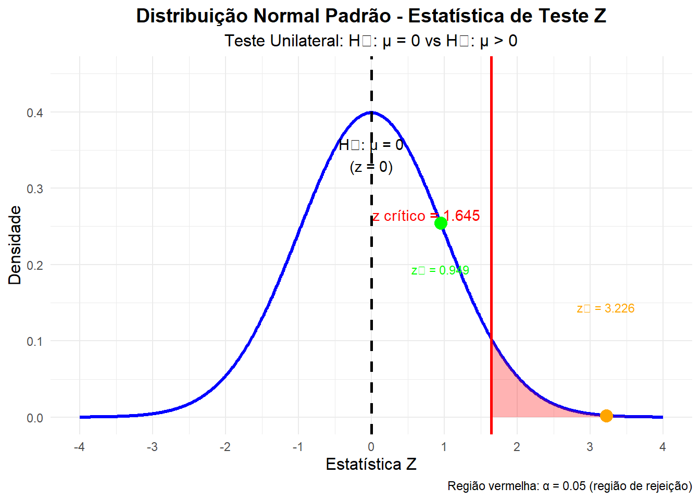

Code
```{r}
# Exemplo dos Adoçantes de Refrigerante - Distribuição Amostral da Média
# Baseado no Capítulo 17 - Testes de Significância: o Básico
# Parâmetros do problema
mu_0 <- 0 # Hipótese nula: μ = 0 (sem perda de doçura)
sigma <- 1 # Desvio-padrão populacional conhecido
n <- 10 # Tamanho da amostra (10 provadores)
alpha <- 0.05 # Nível de significância
# Desvio-padrão da distribuição amostral
sigma_x_bar <- sigma / sqrt(n)
cat("Desvio-padrão da distribuição amostral:", round(sigma_x_bar, 4), "\n")
# Dados dos dois refrigerantes do exemplo
x_bar_1 <- 0.3 # Primeiro refrigerante
x_bar_2 <- 1.02 # Segundo refrigerante
# Estatísticas de teste Z
z_1 <- (x_bar_1 - mu_0) / sigma_x_bar
z_2 <- (x_bar_2 - mu_0) / sigma_x_bar
cat("\nEstatísticas de teste:")
cat("\nRefrigerante 1: x̄ =", x_bar_1, ", z =", round(z_1, 3))
cat("\nRefrigerante 2: x̄ =", x_bar_2, ", z =", round(z_2, 3), "\n")
# Valores P (teste unilateral: H₁: μ > 0)
p_value_1 <- 1 - pnorm(z_1)
p_value_2 <- 1 - pnorm(z_2)
cat("\nValores P (teste unilateral):")
cat("\nRefrigerante 1: P =", round(p_value_1, 4))
cat("\nRefrigerante 2: P =", round(p_value_2, 4), "\n")
# Valor crítico para α = 0.05 (teste unilateral)
z_critico <- qnorm(1 - alpha)
x_bar_critico <- mu_0 + z_critico * sigma_x_bar
cat("\nRegião crítica:")
cat("\nz crítico =", round(z_critico, 3))
cat("\nx̄ crítico =", round(x_bar_critico, 3), "\n")
# Gráfico da distribuição amostral
library(ggplot2)
# Criar sequência de valores para x̄
x_seq <- seq(-1.5, 2, length.out = 1000)
y_seq <- dnorm(x_seq, mean = mu_0, sd = sigma_x_bar)
# Criar data frame para o gráfico
df <- data.frame(x = x_seq, y = y_seq)
# Região de rejeição (α = 0.05)
x_reject <- seq(x_bar_critico, 2, length.out = 100)
y_reject <- dnorm(x_reject, mean = mu_0, sd = sigma_x_bar)
df_reject <- data.frame(x = x_reject, y = y_reject)
# Criar o gráfico
p <- ggplot(df, aes(x = x, y = y)) +
geom_line(size = 1.2, color = "blue") +
# Região de rejeição
geom_area(data = df_reject, aes(x = x, y = y),
fill = "red", alpha = 0.3) +
# Linha vertical para H₀: μ = 0
geom_vline(xintercept = mu_0, linetype = "dashed",
color = "black", size = 1) +
# Linha vertical para valor crítico
geom_vline(xintercept = x_bar_critico, linetype = "solid",
color = "red", size = 1) +
# Pontos das médias amostrais observadas
geom_point(aes(x = x_bar_1, y = dnorm(x_bar_1, mu_0, sigma_x_bar)),
color = "green", size = 4, shape = 16) +
geom_point(aes(x = x_bar_2, y = dnorm(x_bar_2, mu_0, sigma_x_bar)),
color = "orange", size = 4, shape = 16) +
# Rótulos e títulos
labs(
title = "Distribuição Amostral da Média - Exemplo dos Adoçantes",
subtitle = paste("n =", n, ", σ =", sigma, ", σx̄ =", round(sigma_x_bar, 3)),
x = "Média Amostral (x̄)",
y = "Densidade",
caption = "Região vermelha: α = 0.05 (região de rejeição para H₁: μ > 0)"
) +
# Anotações
annotate("text", x = mu_0, y = 0.9,
label = "H₀: μ = 0", vjust = -0.5, hjust = 0.5) +
annotate("text", x = x_bar_critico, y = 0.7,
label = paste("x̄ crítico =", round(x_bar_critico, 3)),
vjust = -0.5, hjust = 1.1, color = "red") +
annotate("text", x = x_bar_1, y = 0.3,
label = paste("Refrig. 1\nx̄ =", x_bar_1, "\nz =", round(z_1, 3),
"\nP =", round(p_value_1, 4)),
vjust = 1, hjust = 0.5, color = "green", size = 3) +
annotate("text", x = x_bar_2, y = 0.15,
label = paste("Refrig. 2\nx̄ =", x_bar_2, "\nz =", round(z_2, 3),
"\nP =", round(p_value_2, 4)),
vjust = 1, hjust = 0.5, color = "orange", size = 3) +
# Tema
theme_minimal() +
theme(
plot.title = element_text(hjust = 0.5, size = 14, face = "bold"),
plot.subtitle = element_text(hjust = 0.5, size = 12),
axis.title = element_text(size = 12),
legend.position = "none"
) +
# Escalas
scale_x_continuous(breaks = seq(-1.5, 2, 0.5)) +
ylim(0, 1.3)
# Exibir o gráfico
print(p)
# Gráfico adicional: Distribuição Normal Padrão (escala Z)
z_seq <- seq(-4, 4, length.out = 1000)
y_z_seq <- dnorm(z_seq)
df_z <- data.frame(z = z_seq, y = y_z_seq)
# Região de rejeição na escala Z
z_reject_seq <- seq(z_critico, 4, length.out = 100)
y_z_reject <- dnorm(z_reject_seq)
df_z_reject <- data.frame(z = z_reject_seq, y = y_z_reject)
p_z <- ggplot(df_z, aes(x = z, y = y)) +
geom_line(size = 1.2, color = "blue") +
# Região de rejeição
geom_area(data = df_z_reject, aes(x = z, y = y),
fill = "red", alpha = 0.3) +
# Linha vertical para z = 0
geom_vline(xintercept = 0, linetype = "dashed",
color = "black", size = 1) +
# Linha vertical para z crítico
geom_vline(xintercept = z_critico, linetype = "solid",
color = "red", size = 1) +
# Pontos das estatísticas Z observadas
geom_point(aes(x = z_1, y = dnorm(z_1)),
color = "green", size = 4, shape = 16) +
geom_point(aes(x = z_2, y = dnorm(z_2)),
color = "orange", size = 4, shape = 16) +
# Rótulos e títulos
labs(
title = "Distribuição Normal Padrão - Estatística de Teste Z",
subtitle = "Teste Unilateral: H₀: μ = 0 vs H₁: μ > 0",
x = "Estatística Z",
y = "Densidade",
caption = "Região vermelha: α = 0.05 (região de rejeição)"
) +
# Anotações
annotate("text", x = 0, y = 0.3,
label = "H₀: μ = 0\n(z = 0)", vjust = -0.5, hjust = 0.5) +
annotate("text", x = z_critico, y = 0.25,
label = paste("z crítico =", round(z_critico, 3)),
vjust = -0.5, hjust = 1.1, color = "red") +
annotate("text", x = z_1, y = 0.2,
label = paste("z₁ =", round(z_1, 3)),
vjust = 1, hjust = 0.5, color = "green", size = 3) +
annotate("text", x = z_2, y = 0.15,
label = paste("z₂ =", round(z_2, 3)),
vjust = 1, hjust = 0.5, color = "orange", size = 3) +
# Tema
theme_minimal() +
theme(
plot.title = element_text(hjust = 0.5, size = 14, face = "bold"),
plot.subtitle = element_text(hjust = 0.5, size = 12),
axis.title = element_text(size = 12)
) +
# Escalas
scale_x_continuous(breaks = seq(-4, 4, 1)) +
ylim(0, 0.45)
# Exibir o segundo gráfico
print(p_z)
# Resumo dos resultados
cat("\n" , rep("=", 50), "\n")
cat("RESUMO DOS RESULTADOS\n")
cat(rep("=", 50), "\n")
cat("Teste: H₀: μ = 0 vs H₁: μ > 0 (unilateral)\n")
cat("Nível de significância: α =", alpha, "\n")
cat("Valor crítico: z =", round(z_critico, 3), ", x̄ =", round(x_bar_critico, 3), "\n\n")
cat("REFRIGERANTE 1:\n")
cat(" Média amostral: x̄ =", x_bar_1, "\n")
cat(" Estatística Z: z =", round(z_1, 3), "\n")
cat(" Valor P:", round(p_value_1, 4), "\n")
cat(" Conclusão:", ifelse(p_value_1 < alpha, "Rejeita H₀", "Não rejeita H₀"), "\n")
cat(" Interpretação:", ifelse(p_value_1 < alpha,
"Evidência significativa de perda de doçura",
"Não há evidência significativa de perda de doçura"), "\n\n")
cat("REFRIGERANTE 2:\n")
cat(" Média amostral: x̄ =", x_bar_2, "\n")
cat(" Estatística Z: z =", round(z_2, 3), "\n")
cat(" Valor P:", round(p_value_2, 4), "\n")
cat(" Conclusão:", ifelse(p_value_2 < alpha, "Rejeita H₀", "Não rejeita H₀"), "\n")
cat(" Interpretação:", ifelse(p_value_2 < alpha,
"Evidência significativa de perda de doçura",
"Não há evidência significativa de perda de doçura"), "\n")
```Desvio-padrão da distribuição amostral: 0.3162
Estatísticas de teste:
Refrigerante 1: x̄ = 0.3 , z = 0.949
Refrigerante 2: x̄ = 1.02 , z = 3.226
Valores P (teste unilateral):
Refrigerante 1: P = 0.1714
Refrigerante 2: P = 6e-04
Região crítica:
z crítico = 1.645
x̄ crítico = 0.52
= = = = = = = = = = = = = = = = = = = = = = = = = = = = = = = = = = = = = = = = = = = = = = = = = =
RESUMO DOS RESULTADOS
= = = = = = = = = = = = = = = = = = = = = = = = = = = = = = = = = = = = = = = = = = = = = = = = = =
Teste: H₀: μ = 0 vs H₁: μ > 0 (unilateral)
Nível de significância: α = 0.05
Valor crítico: z = 1.645 , x̄ = 0.52
REFRIGERANTE 1:
Média amostral: x̄ = 0.3
Estatística Z: z = 0.949
Valor P: 0.1714
Conclusão: Não rejeita H₀
Interpretação: Não há evidência significativa de perda de doçura
REFRIGERANTE 2:
Média amostral: x̄ = 1.02
Estatística Z: z = 3.226
Valor P: 6e-04
Conclusão: Rejeita H₀
Interpretação: Evidência significativa de perda de doçura 
